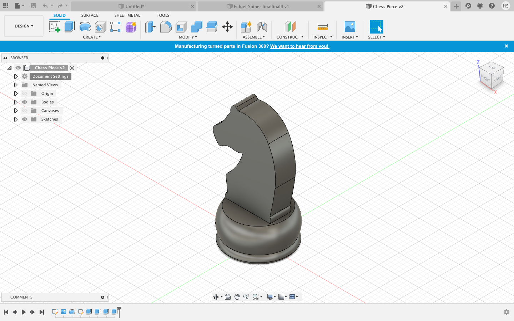
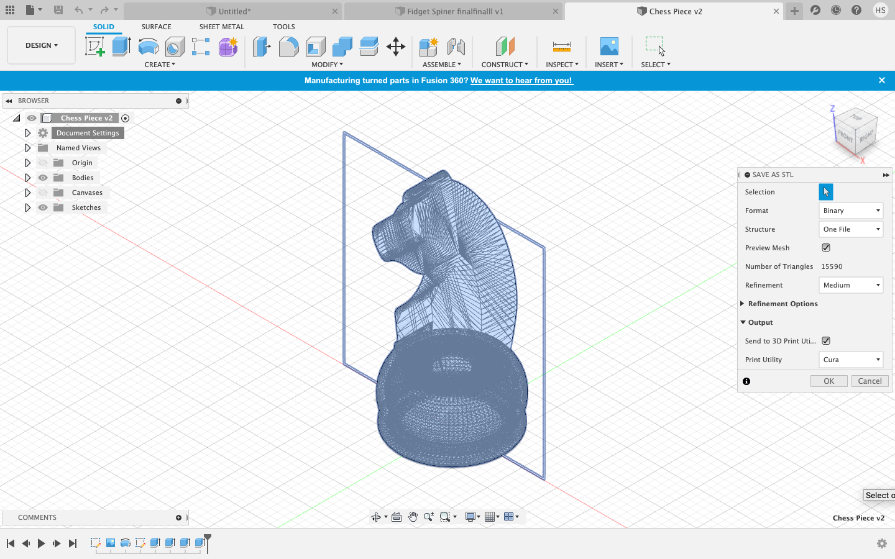
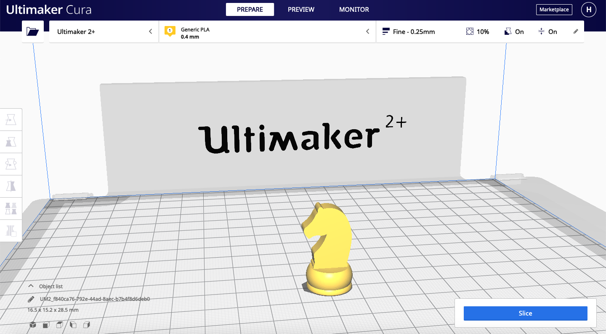
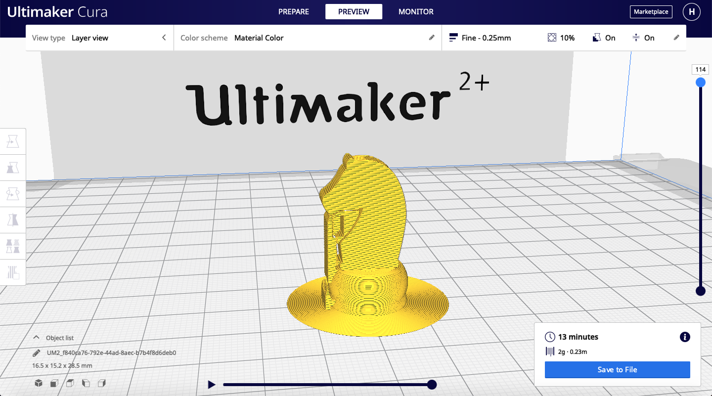
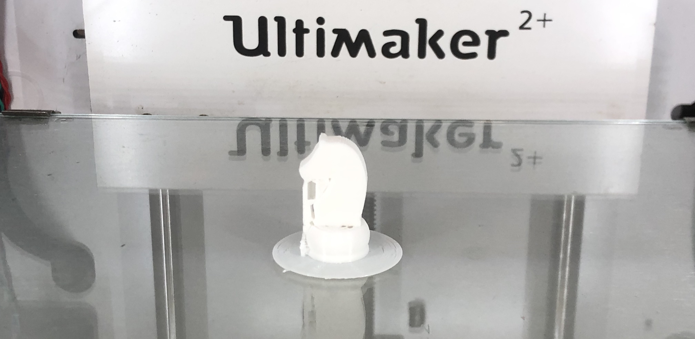
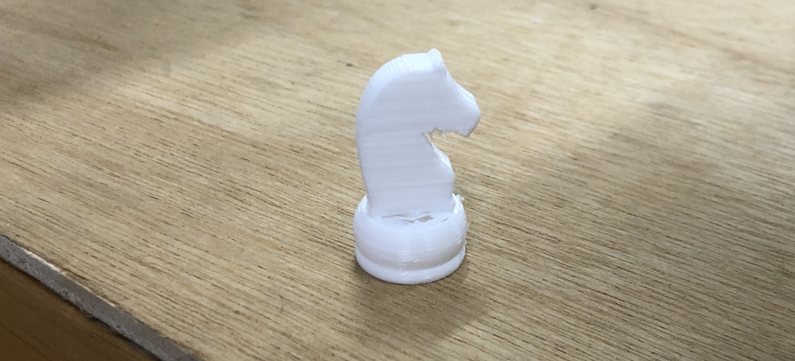
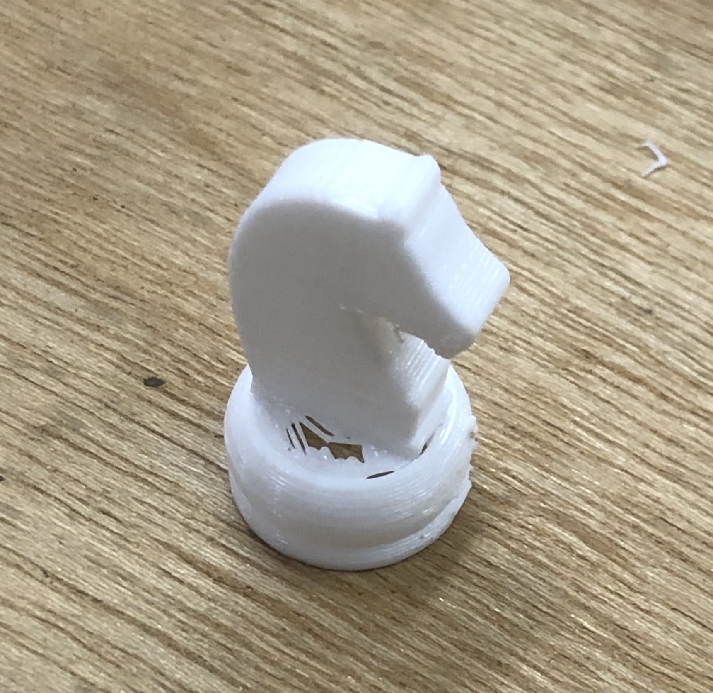

3D Printing
For 3D printing, we will print this chess piece that we have 3D modelled.

Here is a recap of how I did this phone stand:
- To export your finished model, right click the 'Document Settings' and click 'Save as STL'.
- Click on 'Preview Mesh' and send it to the 3D print utility. For me, I used the application Cura to slice my print.

Before you start slicing on Cura, it is important to know the different characteristics of 3D Printing that you can tweak:
- Layer height: This is the height of each layer of the 3D print. The thickness ranges from 0.1-0.4mm thick. The thinner the layer is, the end product will be very smooth. However, it will take very long if the layer is thinner. For your first prototype, I reccommend you using a thinker layer height around 0.25mm as it will take very fast.
- Wall thickness: This controls the number of stands required for the thickness of the wall. The thicker your layer wall, the stronger your print will be. Also, this includes the infill percentage, where it controls the amount of fill in the internal cavities. The usual infill percentage ranges from 10%-18%. The higher the percentage, the more strength your print is. But the time taken to print is much longer.
- Supports: They are used to aid in printing overhangs. They are removed after the print is complete. However, they add on to the print time and also the finishing time as you will need to take out the supports and also file the print if it is very uneven and bumpy from the supports.
- Bed adhesion: The print bed is to improve adhesion. This includes: skirts, brims and rafts. Skirts are used to provide an outline, brims allow some adhesion to the print perimenter and rafts are full platforms where the 3D print will be placed.
Going back to the chess piece, you should have been redirected to Cura to slice your print. Press the slice button and then click on the preview button. You can see the time take for the print to finish and also the how the print is going to be carried out.
|  |  |
If you find that your print is taking too long, there are a few ways to shorten your time taken. Firstly, increase your later height to around 20mm so that it will be faster. Another thing is to reduce the infill to around 10%.
This is my slicing settings before I started 3D printing:
- Layer height: 0.25mm
- Infill density: 10%
- Support: generate support, everywhere
- Build Plate Adhesion Type: Brim
After you have done slicing, save your file as a G-Code format. Transer your file into the Ultimaker 2+ SD Card. After that the 3D printer will print for you. Remember to watch the first few layers to see if it is going well.
This is how my print looked like after printing. It is now cooling down as if it is still hot, the print is stuck onto the plate. As you can see it has its supports at the side.

This is my print after I have taken out the supports. I used pliers to take them out. It was actually tougher than expected and you have to twist it hard to remove it.

|  | As you can see, I made a mistake where I made the inside of my chess base hollow. This lead to the head part only sticking on the edge of the side and also parts of the support that were not taken out. Hence, my chess piece was quite fragile. If I would do it differently, I would fill in the base or I could revolve a longer piece of the top part of the base so that the head can rest on it. |